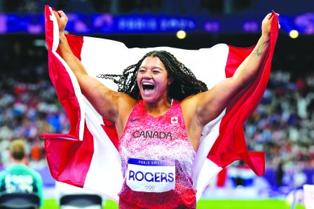

巴黎奥运还剩5天就要落幕，加拿大链球选手罗杰斯(Camryn Rogers，图)周二为本国增添一面金牌，并成为第一位也是唯一一位在奥运链球项目获得奖牌的加拿大女运动员，同时让加拿大代表队在本届奥运男女链球项目均获冠军。本国现在以6金4银8铜共18面奖牌，在奖牌榜名列第11位。
加国在巴黎奥运会上已获6金，距离打平本国参加无抵制夏季奥运会纪录仅差1枚金牌。
来自卑诗省列治文的罗杰斯第二次出战奥运，在东京奥运时，她已创下加拿大女子选手闯入奥运链球决赛的历史。罗杰斯以76.97米的成绩，超越银牌得主美国选手艾奇昆沃克(Annette Echikunwoke)的75.48米，中国选手赵杰以74.27米拿下铜牌。加拿大队本届在男女链球项目均夺得金牌。男子链球金牌选手卡茨伯格(Ethan Katzberg)来自温哥华岛的纳奈莫。
但本国在男子篮球八强止步。拥有多名NBA球星压阵的加拿大男子篮球队，以73比82不敌东道主法国队，惨遭淘汰。加拿大队从开始就被大比数抛离，整场从未领先过，虽然下半场一度将比分追至5分之内，但是由于落后太多，加上法国队表现出色，最终仍然落败。
但本国的奖牌数目仍有望继续增加。来自安省密西沙加的麦肯齐(Sloan MacKenzie)和来自哈利法克斯的文森特 (Katie Vincent)在女子500米双人独木舟短途赛分组赛以首名出线，晋级半决赛，并以1分54秒16的成绩刷新奥运纪录。
是日赛事开始之前，加拿大奥委会突然宣布，即日起取消田径选手德格拉斯(Andre De Grasse)个人教练雷德(Rana Reider)出席巴黎奥运会的认证资格，事源后者在美国涉及性虐待和精神虐待的指控。加拿大田径队主教练吉尔伯特(Glenroy Gilbert)指，德格拉斯状态甚勇，并期待稍后的赛事。德格拉斯已进入男子200米赛事的半决赛。